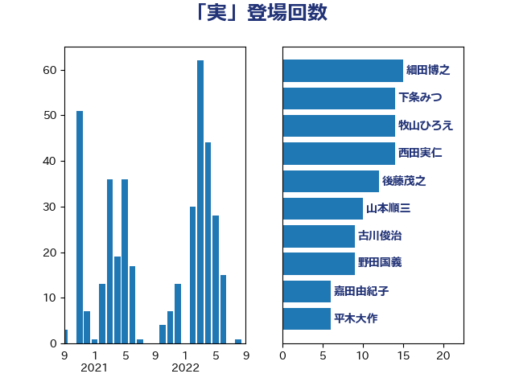

単語「実」

| 細田博之 | 自由民主党 | 15 回 |
| 下条みつ | 立憲民主党 | 14 回 |
| 牧山ひろえ | 立憲民主党 | 14 回 |
| 西田実仁 | 公明党 | 14 回 |
| 後藤茂之 | 自由民主党 | 12 回 |
| 山本順三 | 自由民主党 | 10 回 |
| 古川俊治 | 自由民主党 | 9 回 |
| 野田国義 | 立憲民主党 | 9 回 |
| 嘉田由紀子 | 無所属 | 6 回 |
| 平木大作 | 公明党 | 6 回 |
| 石川大我 | 立憲民主党 | 5 回 |
| 古川禎久 | 自由民主党 | 4 回 |
| 和田有一朗 | 日本維新の会 | 4 回 |
| 杉久武 | 公明党 | 4 回 |
| 柴田巧 | 日本維新の会 | 4 回 |
| 田村憲久 | 自由民主党 | 4 回 |
| 近藤昭一 | 立憲民主党 | 4 回 |
| 野田聖子 | 自由民主党 | 4 回 |
| 金子恭之 | 自由民主党 | 4 回 |
| 階猛 | 立憲民主党 | 4 回 |
| 青柳仁士 | 日本維新の会 | 4 回 |
| 串田誠一 | 日本維新の会 | 3 回 |
| 吉田忠智 | 立憲民主党 | 3 回 |
| 大口善徳 | 公明党 | 3 回 |
| 安江伸夫 | 公明党 | 3 回 |
| 小里泰弘 | 自由民主党 | 3 回 |
| 末松信介 | 自由民主党 | 3 回 |
| 末松義規 | 立憲民主党 | 3 回 |
| 梅村みずほ | 日本維新の会 | 3 回 |
| 梅谷守 | 立憲民主党 | 3 回 |
| 田村まみ | 国民民主党 | 3 回 |
| 鈴木敦 | 国民民主党 | 3 回 |
| 一谷勇一郎 | 日本維新の会 | 2 回 |
| 古賀之士 | 立憲民主党 | 2 回 |
| 城井崇 | 立憲民主党 | 2 回 |
| 城内実 | 自由民主党 | 2 回 |
| 堤かなめ | 立憲民主党 | 2 回 |
| 大島敦 | 立憲民主党 | 2 回 |
| 山口壯 | 自由民主党 | 2 回 |
| 山崎誠 | 立憲民主党 | 2 回 |
| 岬麻紀 | 日本維新の会 | 2 回 |
| 早稲田ゆき | 立憲民主党 | 2 回 |
| 林芳正 | 自由民主党 | 2 回 |
| 櫻井周 | 立憲民主党 | 2 回 |
| 船橋利実 | 自由民主党 | 2 回 |
| 高木かおり | 日本維新の会 | 2 回 |
| 高橋光男 | 公明党 | 2 回 |
| 高良鉄美 | 無所属 | 2 回 |
| あべ俊子 | 自由民主党 | 1 回 |
| ながえ孝子 | 無所属 | 1 回 |
| 三浦信祐 | 公明党 | 1 回 |
| 上川陽子 | 自由民主党 | 1 回 |
| 上月良祐 | 自由民主党 | 1 回 |
| 上田清司 | 国民民主党 | 1 回 |
| 上田英俊 | 自由民主党 | 1 回 |
| 中川正春 | 立憲民主党 | 1 回 |
| 五十嵐清 | 自由民主党 | 1 回 |
| 井林辰憲 | 自由民主党 | 1 回 |
| 伊藤孝恵 | 国民民主党 | 1 回 |
| 住吉寛紀 | 日本維新の会 | 1 回 |
| 佐々木さやか | 公明党 | 1 回 |
| 吉川元 | 立憲民主党 | 1 回 |
| 吉田統彦 | 立憲民主党 | 1 回 |
| 坂本哲志 | 自由民主党 | 1 回 |
| 塩村あやか | 立憲民主党 | 1 回 |
| 大串博志 | 立憲民主党 | 1 回 |
| 大家敏志 | 自由民主党 | 1 回 |
| 宮崎政久 | 自由民主党 | 1 回 |
| 山口俊一 | 自由民主党 | 1 回 |
| 山崎正恭 | 公明党 | 1 回 |
| 山田美樹 | 自由民主党 | 1 回 |
| 川合孝典 | 国民民主党 | 1 回 |
| 川田龍平 | 立憲民主党 | 1 回 |
| 斎藤嘉隆 | 立憲民主党 | 1 回 |
| 新妻秀規 | 公明党 | 1 回 |
| 日下正喜 | 公明党 | 1 回 |
| 木原誠二 | 自由民主党 | 1 回 |
| 木村英子 | れいわ新選組 | 1 回 |
| 杉尾秀哉 | 立憲民主党 | 1 回 |
| 杉本和巳 | 日本維新の会 | 1 回 |
| 松川るい | 自由民主党 | 1 回 |
| 根本匠 | 自由民主党 | 1 回 |
| 横沢高徳 | 立憲民主党 | 1 回 |
| 浅田均 | 日本維新の会 | 1 回 |
| 浜地雅一 | 公明党 | 1 回 |
| 海江田万里 | 立憲民主党 | 1 回 |
| 清水貴之 | 日本維新の会 | 1 回 |
| 渡辺博道 | 自由民主党 | 1 回 |
| 牧原秀樹 | 自由民主党 | 1 回 |
| 石井啓一 | 公明党 | 1 回 |
| 石井準一 | 自由民主党 | 1 回 |
| 石井章 | 日本維新の会 | 1 回 |
| 笠井亮 | 日本共産党 | 1 回 |
| 緑川貴士 | 立憲民主党 | 1 回 |
| 美延映夫 | 日本維新の会 | 1 回 |
| 舟山康江 | 国民民主党 | 1 回 |
| 若松謙維 | 公明党 | 1 回 |
| 若林健太 | 自由民主党 | 1 回 |
| 藤井比早之 | 自由民主党 | 1 回 |
| 赤澤亮正 | 自由民主党 | 1 回 |
| 越智隆雄 | 自由民主党 | 1 回 |
| 足立敏之 | 自由民主党 | 1 回 |
| 道下大樹 | 立憲民主党 | 1 回 |
| 酒井庸行 | 自由民主党 | 1 回 |
| 重徳和彦 | 立憲民主党 | 1 回 |
| 金田勝年 | 自由民主党 | 1 回 |
| 長谷川岳 | 自由民主党 | 1 回 |
| 阿部司 | 日本維新の会 | 1 回 |
| 青木愛 | 立憲民主党 | 1 回 |
| 音喜多駿 | 日本維新の会 | 1 回 |
| 馬場雄基 | 立憲民主党 | 1 回 |
| 高木毅 | 自由民主党 | 1 回 |
| 鬼木誠 | 立憲民主党 | 1 回 |
| 麻生太郎 | 自由民主党 | 1 回 |